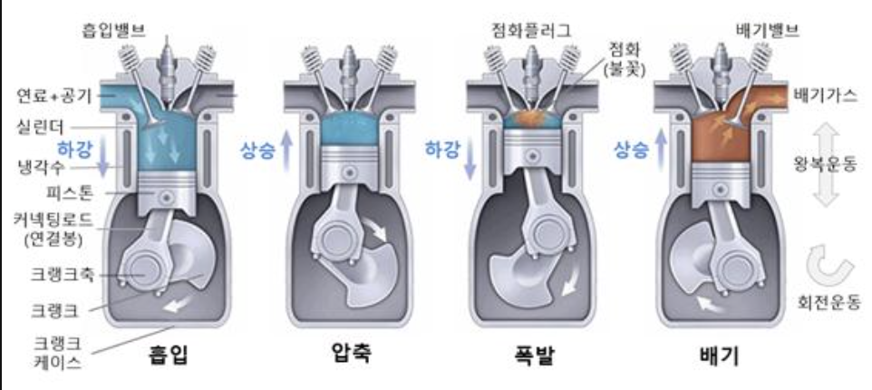
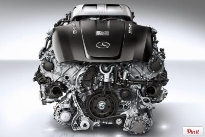
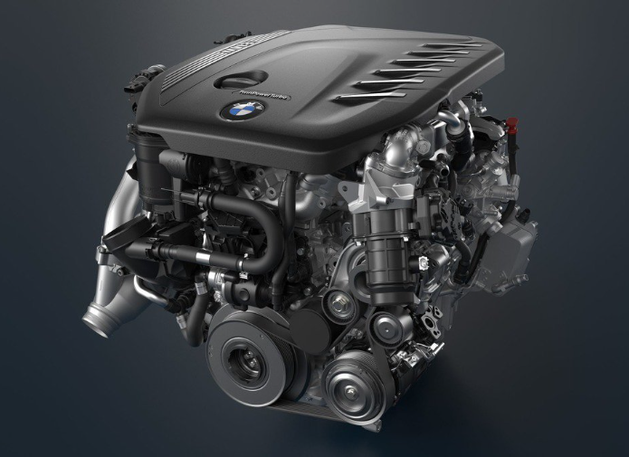
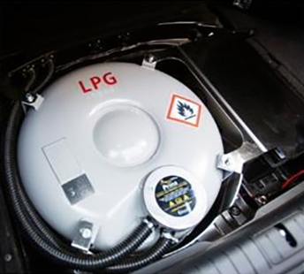

흔히 자동차라고 하면 가솔린 엔진을 사용하는 자동차를 떠올립니다. 가솔린 자동차는 내연기관 자동차의 일종입니다. 내연기관 자동차란 엔진을 사용하는 자동차입니다. 전기자동차는 배터리와 전기모터를 사용하고 엔진이 없기 때문에 내연기관 자동차에 속하지 않습니다. 가솔린 자동차, 디젤 자동차, LPG 자동차 등 석유를 사용하는 자동차와 천연가스 자동차, 바이오디젤 자동차 등을 합쳐서 내연기관 자동차라고 부릅니다. 이제부터 다양한 내연기관 자동차에 대해 알아보겠습니다.
내연기관
자동차를 움직이는 힘으로 자동차의 심장에 비유될 만큼 중요한 내연기관에 대해 알아보겠습니다. 내연기관(Internal combustion engine)은 열에너지를 흡수하여, 그 에너지 중 일부를 역학적 에너지로 변환시키는 장치인 열기관의 한 종류입니다. 공기와 연료 등의 산화제를 실린더 내부에서 연소시켜 연료가 가진 열에너지가 직접 피스톤에 작용하여 동력 에너지를 얻는 엔진입니다. 대표적인 내연기관으로는 디젤기관과 가솔린기관이 있습니다.연소실 내부에서 산화제와 연료의 발열반응으로 반응 시 높은 온도와 압력으로 인한 기체가 만들어집니다. 발생한 기체가 연소실 내부의 축차 및 피스톤을 움직이게 하여 내연기관을 가동시킵니다. 기관 외부의 열을 이용하는 스털링 엔진이나 증기기관 같은 외연기관과 대비됩니다.내연기관의 작동 방식을 알아보기 전에 ‘행정’이라는 것을 알아야 합니다. 피스톤이 한 번 올라가거나 내려가는 것을 ‘1 행정’이라고 합니다. 가장 대표적인 방식은 4행정 방식이며, 2행정, 5행정, 6행정 방식도 있습니다. 예를 들어 2행정 방식은 피스톤이 한 번 왕복하는 동안 즉, 2행정하는 동안 한 주기가 끝납니다. 4행정 방식은 흡입, 압축, 폭발, 배기를 반복합니다.

흡입 – 두 밸브가 닫힌 상태에서 피스톤이 실린더 속 맨 위에 있을 때 시작합니다. 피스톤이 내려가고 흡입 밸브가 열리면서 휘발유 증기와 공기의 혼합 기체가 원통 안으로 주입됩니다. 그리고 피스톤이 맨 아래로 내려가면서 흡입 벨브가 닫히고 흡입이 끝납니다.
압축 – 플라이휠의 회전운동으로 피스톤이 다시 위로 올라가면서 주입된 혼합 기체가 압축되어 피스톤이 맨 위에 있을 때 끝납니다.
폭발 – 피스톤이 맨 위에 있을 때 점화플러그가 불꽃방전을 일으켜 압축된 혼합기체가 순간적으로 연소됩니다. 연소되면서 생기는 열로 고온 고압 상태가 된 연소 기체가 피스톤을 아래로 밀어 내립니다. 이 과정에서 연소 기체의 열에너지가 플라이휠의 회전운동 에너지로 바뀝니다.
배기 - 플라이휠의 회전운동에 따라 아래로 내려간 피스톤이 다시 올라올 때 배기 밸브가 열리면서 연소 기체를 밖으로 내보내며, 피스톤이 맨 위로 올라갔을 때 배기 밸브가 닫히면서 끝납니다.
간단하게 말하자면 연료를 흡입하여 폭발시킨 힘으로 피스톤을 밀어내고 밀려난 피스톤이 축을 회전시켜 그 힘이 바퀴에 전달되어 자동차가 움직이는 것입니다.
가솔린 자동차

일반적으로 자동차에 가장 많이 사용하는 연료인 가솔린(gasoline)은 가장 오래되고 대중적인 연료입니다. 가솔린은 다른 연료에 비해 휘발성이 강해 휘발유라고 불립니다. 이름에서도 알 수 있듯이 휘발유는 상온에서도 쉽게 증발하고 인화성이 좋아 공기와 혼합되면 쉽게 폭발합니다. 이러한 특징을 가진 가솔린을 사용한 엔진이 바로 가솔린 엔진입니다. 공기 14g과 가솔린 엔진 가솔린 1g이 섞인 혼합기체를 8배~10배 압축하여 불꽃 방전을 일으켜 휘발유를 연소시키고 그때 생긴 열에너지로 피스톤을 밀어 운동에너지를 얻습니다. 엔진의 구조로는 냉각핀을 사용하는 공랭식도 있으나 보통 냉각수를 사용하는 수랭식이 많으며 다른 엔진들과 달리 기화기라는 장치가 있습니다. 기화기를 통해 연료와 공기가 혼합된 기체를 흡입합니다. 요즘은 기화기를 통한 연료 공급보다 가솔린 분사 펌프에서 실린더 내에 분사하는 가솔린 분사가 실용화되고 있습니다.가솔린은 소음과 진동은 적지만, 다른 연료와 비교했을 때 상대적으로 가격이 비싸고, 디젤보다 토크(torque, 회전력)와 압축비가 낮아 회전수가 같아도 힘이 약할 수 있다는 단점이 있습니다. 또한 열효율이 높지 않아 여러 자동차 업체가 가솔린 엔진의 열효율을 높이기 위해 기술개발을 하고 있습니다. 그런데도 아직 실린더 내부에서 폭발을 위한 연료의 양이 디젤에 비해 많이 필요합니다. 가솔린이 불꽃을 통해 점화되기 전에 스스로 폭발해 버리는 이상점화 증상에도 취약합니다. 실린더 내부에서 고압 고온으로 압축된 가솔린이 견디지 못하고 먼저 불이 붙어버리면 피스톤이 압축을 위해 올라가는 상황에서 그와 반대된 방향으로 강한 힘이 발생합니다. 이 현상을 노킹(knocking)이라고 부르며 엔진에 큰 무리를 가져옵니다. 그러므로 엔진의 압축 비율은 노킹 현상을 방지하기 위해서 10:1로 하며 연료와 공기의 혼합 비율을 14:1로 결정합니다.가솔린 엔진은 피스톤의 행정 거리가 짧기 때문에 회전수를 높이기가 쉬워 출력이 높으며, 초반 가속 힘은 약할 수 있지만, 고속주행이나 가속을 즐기는 운전자들에게 적합한 연료 방식입니다. 또한, 가솔린 엔진 차량은 디젤 차량에 비해 같은 배기량에도 차량 가격이 저렴한 편이며 유지 보수 비용도 저렴합니다. 가솔린 엔진은 일반적으로 승차감을 중요시하는 고급 승용차나 일반 승용차, 소형차 등에 주로 사용되고 있습니다. 우리가 알고 있는 대부분의 승용차들은 가솔린 엔진을 사용합니다.
디젤 자동차

디젤(diesel)은 탄화수소의 혼합물로 중유에 비해 상대적으로 밀도가 낮아 한자의 ‘가벼울 경’자를 써서 경유(輕油])라고도 부릅니다. 디젤은 연소 효율이 높고 불완전 연소로 나오는 불순물도 적어 클린 에너지라고도 불립니다. 가솔린과 함께 일반적으로 많이 사용되는 연료로 휘발성이 낮아 쉽게 불이 붙지 않아 폭발의 위험이 적습니다.전기와 점화플러그를 사용한 압축착화식의 가솔린 엔진과 비교해 보면, 디젤 엔진은 형태와 생김새는 비슷하지만 연료를 점화하는 방식이 다릅니다. 디젤 엔진은 실린더 안의 공기를 10분의 1로 압축하여 온도를 600℃ 이상으로 높인 후에 연료를 실린더 안에 분출해 디젤이 스스로 점화하게 하는 방식입니다. 그러므로 디젤 엔진을 사용한 차량은 연비 효율과 힘이 좋으며 강한 압축을 견디기 위해서 엔진의 내구성이 좋아야 합니다. 또한, 흡입되는 혼합기의 양에 따라 출력이 조절되는 가솔린 엔진과 달리, 분사하는 연료의 양에 따라 출력이 조절됩니다. 가솔린 엔진의 경우 가솔린과 공기가 섞인 혼합기에 전기 불꽃으로 점화해서 바로 연소되지만, 디젤 엔진은 연료가 미세한 액체로 공기 중에 분사되어 가스가 되기까지 시간이 걸리므로 최고 출력과 최고 회전수가 낮습니다. 비록 출력은 가솔린 엔진보다 낮을 수 있지만 높은 토크로 초기 가속이 쉽습니다. 낮은 회전수에도 높은 출력을 낼 수 있어 저속에서도 강한 힘이 필요한 화물차, SUV, 트럭 등에 주로 적용됩니다.그렇다면 단순히 공기의 온도를 높여 연료의 연소가 잘 이루어지도록 압축비를 높이는 것이 좋다고 생각할 수 있습니다. 하지만 그만큼 연소가스의 팽창력도 비례하여 커지므로 압축을 견딜 수 있는 견고한 엔진을 만들어야 합니다. 디젤은 고압력으로 연소하기 때문에 진동과 소음 문제가 항상 꼬리표처럼 따라다니지만 최근에는 소음 억제 기술의 발달로 정숙성과 힘을 모두 살린 디젤 차량도 나오고 있습니다. 디젤 엔진은 좋은 연비와 이산화탄소 배출 저감이라는 장점도 있지만 환경오염의 문제점도 가지고 있습니다. 2012년 6월 세계보건기구(WHO)는 국제암연구소(IARC)의 연구결과에 따라 디젤 배출가스를 1등급 발암물질로 분류했습니다. 디젤에 함유된 유황분은 공기 중으로 황산화 물질을 배출시키고 공기 중의 황산화 물질은 산화 과정을 거쳐 수증기와 반응하며 황산이 됩니다. 황산은 사람의 호흡기와 눈에 염증을 일으키고 위장장애의 원인이 되는 등의 문제점이 있습니다. 또한 디젤 엔진은 실린더의 용적을 통해 거의 일정한 공기가 흡입되기 때문에 엔진에 부하되는 부담이 적습니다. 연료의 분사량이 적은 상태에서는 충분한 공기로 완전 연소가 되지만 엔진에 부하가 걸린 상태에서 분사량이 많아지면 공기가 부족하여 불완전 연소가 됩니다. 불완전 연소는 그을음을 만들어 매연의 원인이 됩니다. 이러한 이유로 정부에서는 디젤 차량에 환경부담금을 부과하고 있으며 전 세계적으로도 디젤 차량에 대한 규제가 시행되고 있습니다. 현재 출시되는 디젤 자동차는 다양한 후처리 시스템이 탑재되지만 장치들의 가격도 만만치 않으며, 연비와 엔진의 출력에 영향을 미칩니다. 대표적인 디젤 차량으로는 BMW의 X7, 기아차의 스포티지, 현대자동차의 투싼 등이 있습니다.
LPG 자동차

LPG(엘피지)는 석유 성분 중 프로판, 부탄 등 끓는 점이 낮은 탄화수소가 주성분인 가스를 상온에서 낮은 압력을 가하여 액화한 것입니다. LPG는 “liquefied petroleum gas”의 약자로서 액화석유가스라고 번역할 수 있습니다. LPG는 부피가 250분의 1로 줄어들어 저장과 운송에 편리하며, 다른 연료에 비해 열량이 높고 냄새나 색이 없습니다. 가정이나 자동차에 사용하는 LPG에는 누설 사고를 방지하기 위해 메르캅탄류의 화학물질을 첨가하여 공급합니다. LPG는 다른 연료에 비해 가격이 저렴하며 유해물질도 적게 배출하는 장점이 있습니다. 원래 택시법인, 국가유공자, 장애인, 렌터카 회사 등 일부만 구입할 수 있었던 LPG 차량에 대한 규제도 2019년 3월 26일부터는 철폐되었습니다. LPG 엔진은 가솔린 엔진과 구조는 기본적으로 같으며 고압용기 봄베에 압축되어 있는 LPG가 연료필터, 솔레노이드 밸브, 연료 파이브 등을 거쳐 기화기를 통해 공기와 섞여 실린더 안에서 폭발하면서 엔진이 구동됩니다. 연료가 완전 연소하므로 배기도 깨끗하고, 엔진의 수명이 길고, 오일 교환이 적은 것이 특징입니다.하지만 LPG를 그대로 사용하는 LPG 엔진은 겨울철에 시동 불량 현상이 생기고 연비가 급격히 떨어지는 등의 문제가 발생합니다. 문제의 원인을 알아보면 LPG는 부탄과 프로판으로 구성되어 있습니다. 부탄은 부테인이라고도 하고, 프로판은 프로페인이라고도 하는데, 둘 다 표준어입니다. 부탄(C4H10)은 발열량이 높아 연비와 출력을 높이는 역할을 하고, 프로판(C3H8)은 순간 압력이 강해 부탄과 프로판을 일정한 비율로 혼합하여 사용합니다. 부탄의 어는점은 영하 0.5도이며 프로판의 어는점은 영하 42.1도입니다. 한국의 겨울은 쉽게 영하 0.5도 이하로 내려가 프로판이 얼어버려 시동이 걸리지 않거나 불완전 연소로 연비가 떨어지게 됩니다. 이러한 문제점을 해결하기 위해 LPI 엔진이 등장했습니다. LPI 엔진은 액상의 LPG를 ECU 신호에 따라 인젝터를 통해 기화기 없이 액상 상태 그대로 분사하는 형식입니다. 각 실린더마다 위치한 흡입 밸브에 분사하는 MPI 엔진의 형태입니다. 각각의 실린더별로 제어가 가능하며, 기체 상태의 연료는 제어가 어렵지만 액체 상태의 연료는 양 조절이 쉬워 엔진 성능이 더욱 향상됩니다.또한, ‘LPG 차는 값싼 연료비 말고는 좋은 게 없다.’라는 말이 있지만 엔진소음이 작고 노킹(knocking) 현상도 거의 발생하지 않아 승차감이 좋습니다. 연소실에 카본이 쌓이지 않아 점화 플러그도 오래 사용할 수 있습니다. 충전소가 부족하다는 점도 종종 언급되지만 전용 어플리케이션을 이용하면 인근의 충전소도 쉽게 찾을 수 있으며 전기자동차처럼 충전소가 부족하거나 충전시간이 오래 걸리지 않습니다. 또 트렁크에 LPG 통을 싣고 다녀야 하는 불편함이 있지만 르노삼성자동차는 LPG 연료탱크가 트렁크 공간을 차지하지 않도록 스페어타이어 공간에 도넛 형태의 봄베를 장착하여 트렁크 적재 공간을 40% 가량 증가시켰습니다. 대표적인 LPG 차종으로는 기아자동차의 K7, 현대자동차의 쏘나타, 아반떼, 르노삼성자동차의 SM5, SM6 등이 있습니다.